Bewusstlosigkeit & Wiederbelebung
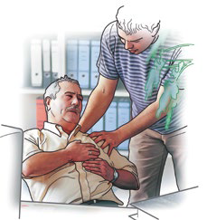
Wiederbelebung ist immer dann notwendig, wenn durch einen Unfall, eine akute Erkrankung oder eine Vergiftung die Lebensfunktionen – Bewusstsein, Atmung und Kreislauf – ausfallen. Hier zählt jede Sekunde. Die Maßnahmen in diesem Kapitel sollte man gut geübt haben, dazu ist die Teilnahme an einem Erste-Hilfe-Kurs zwingend notwendig.Symptome für Bewusstlosigkeit
 Hat eine Person das Bewusstsein verloren, reagiert sie nicht mehr auf äußere Einflüsse, die Muskulatur ist erschlafft. Der Zustand ist einem Tiefschlaf vergleichbar, aus dem sie nicht erweckt werden kann.
Hat eine Person das Bewusstsein verloren, reagiert sie nicht mehr auf äußere Einflüsse, die Muskulatur ist erschlafft. Der Zustand ist einem Tiefschlaf vergleichbar, aus dem sie nicht erweckt werden kann.
 Wenn Sie eine scheinbar leblose Person auffinden, sprechen Sie die Person laut und deutlich an: "Hallo, können Sie mich hören?"
Wenn Sie eine scheinbar leblose Person auffinden, sprechen Sie die Person laut und deutlich an: "Hallo, können Sie mich hören?"
 Fassen Sie die Person kräftig an den Schultern an.
Fassen Sie die Person kräftig an den Schultern an.
Warnhinweis
Achtung: Säuglinge und Kleinkinder dürfen Sie niemals kräftig rütteln oder schütteln.
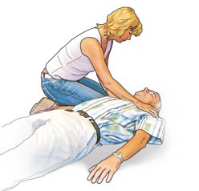
Reagiert die betroffene Person darauf und macht z. B. die Augen auf und beginnt sich zu orientieren und zu bewegen, ist sie nicht bewusstlos.So helfen Sie richtig
 Helfen Sie in diesem Fall entsprechend der erkennbaren Symptome.
Helfen Sie in diesem Fall entsprechend der erkennbaren Symptome.
 Notruf/Alarmieren Sie sofort den Rettungsdienst.
Notruf/Alarmieren Sie sofort den Rettungsdienst.
Bewusstsein und Bewusstlosigkeit
Arbeiten die verschiedenen Bereiche des Nervensystems ungestört zusammen, so ist der Mensch bei Bewusstsein. Er kann sehen, hören, fühlen, riechen und schmecken. Sein Denk-, Merk- und Reaktionsvermögen funktioniert ebenso wie die Fähigkeit, geordnete Bewegungsabläufe auszuführen. Er ist örtlich, zeitlich und der Situation entsprechend orientiert. Auch die wichtigen Schutzreflexe sind, obwohl sie nicht bewusst gesteuert werden, von einem ungestörten Bewusstsein abhängig.
Bei Bewusstlosen ist die Muskulatur völlig erschlafft und die Schutzreflexe sind ausgeschaltet. Daher besteht die Gefahr, dass die Zunge in den Rachenraum sinkt und dort die Atemwege verschließen kann. Da der Hustenreflex bei Bewusstlosen fehlt, können außerdem Speichel, Erbrochenes oder Blut in die Atemwege gelangen und zur Erstickung führen.
Ursachen für Bewusstlosigkeit
Ursachen für Bewusstseinsstörungen sind beispielsweise Beeinträchtigungen der Gehirnfunktion nach schweren Kopfverletzungen, klimatische Einflüsse auf den Organismus (z. B. Hitzschlag) oder vom Gehirn ausgehende Krampfanfälle, sowie Gefäßverletzungen mit massiven Blutungen oder bei Erwachsenen akute Erkrankungen wie Schlaganfall, Herzinfarkt und Herzrhythmusstörungen.
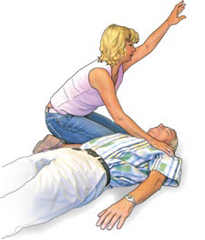
Reagiert die Person nicht, bewegt sie sich nicht und bleiben die Augen geschlossen, ist die Person bewusstlos.So helfen Sie richtig
 Rufen Sie laut um Hilfe, damit andere Personen aufmerksam werden und Ihnen helfen.
Rufen Sie laut um Hilfe, damit andere Personen aufmerksam werden und Ihnen helfen.
 Notruf/Alarmieren Sie den Rettungsdienst.
Notruf/Alarmieren Sie den Rettungsdienst.
 Immer wenn Sie feststellen, dass eine verletzte oder kranke Person bewusstlos ist, müssen Sie sofort ihre Atmung prüfen.
Immer wenn Sie feststellen, dass eine verletzte oder kranke Person bewusstlos ist, müssen Sie sofort ihre Atmung prüfen.
Eine bewusstlose Person, die noch atmet, darf keinesfalls auf dem Rücken liegen bleiben. Sie würde in dieser Lage infolge der Atemwegsverlegung durch die zurücksinkende Zunge ersticken! Vielmehr müssen Sie sie behutsam, aber schnell so lagern, dass Flüssigkeiten (z. B. Speichel, Erbrochenes oder Blut) aus dem Mund abfließen können und die Zunge die Atemwege nicht verlegen kann. Dies erreichen Sie durch die Seitenlage.
So prüfen Sie die Atmung
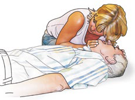
 Fassen Sie die bewusstlose Person mit zwei bis drei Fingern am Kinn und mit der anderen Hand an der Stirn, und legen Sie so ihren Kopf behutsam nach hinten (Überstrecken des Halses). Das Kinn dabei leicht anheben und nach vorne ziehen.
Fassen Sie die bewusstlose Person mit zwei bis drei Fingern am Kinn und mit der anderen Hand an der Stirn, und legen Sie so ihren Kopf behutsam nach hinten (Überstrecken des Halses). Das Kinn dabei leicht anheben und nach vorne ziehen.
 Sie können mit der eigenen Wange und dem Ohr dicht über Mund und Nase der Person ihre Atmung fühlen und meist auch hören. Dabei blicken Sie zum Brustkorb und sehen, wie sich Brust und Bauch beim Atmen heben und senken.
Sie können mit der eigenen Wange und dem Ohr dicht über Mund und Nase der Person ihre Atmung fühlen und meist auch hören. Dabei blicken Sie zum Brustkorb und sehen, wie sich Brust und Bauch beim Atmen heben und senken.
Achtung: Sind an Bauch und Brustkorb Bewegungen erkennbar, ohne dass ein Atemzug erfolgt, kann eine Verlegung der Atemwege vorliegen (siehe hier).
 Die Atemkontrolle nicht länger als 10 Sek. durchführen.
Die Atemkontrolle nicht länger als 10 Sek. durchführen.
Entscheidung treffen!
 Erkennen Sie einen Atemstillstand bzw. keine normale Atmung, z. B. Schnappatmung, müssen Sie unverzüglich mit der Reanimation beginnen.
Erkennen Sie einen Atemstillstand bzw. keine normale Atmung, z. B. Schnappatmung, müssen Sie unverzüglich mit der Reanimation beginnen.
 Erkennen Sie Anzeichen für eine normale Atmung, müssen Sie die betroffene Person in die Seitenlage bringen.
Erkennen Sie Anzeichen für eine normale Atmung, müssen Sie die betroffene Person in die Seitenlage bringen.
Seitenlage
Wenn Sie erkennen, dass die bewusstlose Person noch normal atmet, sollte sie nicht auf dem Rücken liegen. Sie könnte ersticken.
So helfen Sie richtig
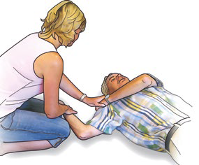
 Knien Sie seitlich neben der betroffenen Person und legen Sie den nahen Arm abgewinkelt neben den Kopf.
Knien Sie seitlich neben der betroffenen Person und legen Sie den nahen Arm abgewinkelt neben den Kopf.
 Greifen Sie die ferne Hand und führen Sie diese an die Wange der betroffenen Person und halten sie dort fest.
Greifen Sie die ferne Hand und führen Sie diese an die Wange der betroffenen Person und halten sie dort fest.
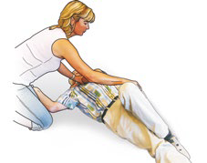
 Fassen Sie jetzt das ferne Bein oberhalb des Knies und ziehen die betroffene Person zu sich. Der Körper wird so vorsichtig auf die Seite gelegt.
Fassen Sie jetzt das ferne Bein oberhalb des Knies und ziehen die betroffene Person zu sich. Der Körper wird so vorsichtig auf die Seite gelegt.
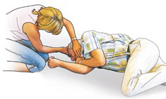
 Damit die Atemwege frei sind, müssen Sie den Kopf der betroffenen Person nackenwärts beugen und darauf achten, dass der Mund geöffnet ist. So können Flüssigkeiten ungehindert abfließen. Legen Sie die Finger der nahen Hand mit dem Handrücken nach oben unter die Wange, so dass der Kopf in seiner Lage stabilisiert wird.
Damit die Atemwege frei sind, müssen Sie den Kopf der betroffenen Person nackenwärts beugen und darauf achten, dass der Mund geöffnet ist. So können Flüssigkeiten ungehindert abfließen. Legen Sie die Finger der nahen Hand mit dem Handrücken nach oben unter die Wange, so dass der Kopf in seiner Lage stabilisiert wird.
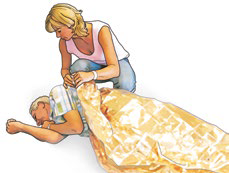
 Die betroffene Person zudecken. Die Decke auch unter den Körper schieben.
Die betroffene Person zudecken. Die Decke auch unter den Körper schieben.
 Sollte die betroffene Person aufwachen, bevor der Rettungsdienst eintrifft, sorgen Sie dafür, dass sie zunächst unverändert liegen bleibt.
Sollte die betroffene Person aufwachen, bevor der Rettungsdienst eintrifft, sorgen Sie dafür, dass sie zunächst unverändert liegen bleibt.
 Beobachten Sie ununterbrochen die Atmung. Setzt die Atmung aus, drehen Sie sie auf den Rücken und beginnen mit der Wiederbelebung.
Beobachten Sie ununterbrochen die Atmung. Setzt die Atmung aus, drehen Sie sie auf den Rücken und beginnen mit der Wiederbelebung.
Herz-Kreislauf-Stillstand
 Bei einem Herz-Kreislauf-Stillstand wird die betroffene Person innerhalb weniger Sekunden bewusstlos. Sie reagiert nicht mehr auf äußere Einflüsse, die Muskulatur ist erschlafft.
Bei einem Herz-Kreislauf-Stillstand wird die betroffene Person innerhalb weniger Sekunden bewusstlos. Sie reagiert nicht mehr auf äußere Einflüsse, die Muskulatur ist erschlafft.
 Lautes Ansprechen: "Hallo, können Sie mich hören?" und kräftiges Anfassen an den Schultern sind erfolglos.
Lautes Ansprechen: "Hallo, können Sie mich hören?" und kräftiges Anfassen an den Schultern sind erfolglos.
 Nahezu gleichzeitig setzt die Atmung aus.
Nahezu gleichzeitig setzt die Atmung aus.
Prüfen Sie die Atmung (siehe hier). Ist sie nicht normal (z. B. Schnappatmung*), bzw. ist keine Atmung erkennbar, müssen Sie von einem Herz-Kreislauf-Stillstand ausgehen und umgehend mit Wiederbelebungsmaßnahmen beginnen.
| * | Achtung: Auch gelegentliche, einzelne Atemzüge, die in dieser Situation typisch sind, dürfen Sie nicht als normale Atmung werten! |
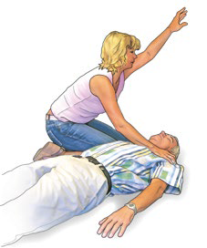
So helfen Sie richtig
 Rufen Sie sofort laut um Hilfe, wenn Sie eine bewusstlose Person auffinden,
Rufen Sie sofort laut um Hilfe, wenn Sie eine bewusstlose Person auffinden,
 Veranlassen Sie sofort den Notruf (112). Sind Sie alleine, müssen Sie selbst sofort anrufen (nutzen Sie wenn möglich den Lautsprecher des Telefons).
Veranlassen Sie sofort den Notruf (112). Sind Sie alleine, müssen Sie selbst sofort anrufen (nutzen Sie wenn möglich den Lautsprecher des Telefons).
 Ist ein Defibrillationsgerät (AED: Automatisierter Externer Defibrillator) in der Nähe, muss dieser unverzüglich von einer weiteren Person herbei geholt werden.
Ist ein Defibrillationsgerät (AED: Automatisierter Externer Defibrillator) in der Nähe, muss dieser unverzüglich von einer weiteren Person herbei geholt werden.
Häufigste Ursache für Störungen des Herz-Kreislauf-Systems bei Erwachsenen sind Gefäßveränderungen, die vor allem im Bereich der Koronargefäße (der Herzkranzgefäße) zu Gefäßverengungen und schließlich zu deren Verschluss, dem Herzinfarkt, führen.
Schlimmstenfalls tritt ein völliger Herz-Kreislauf-Stillstand ein. Aber auch Unfälle, z. B. mit massiven Blutungen, können den Kreislauf bedrohlich schwächen. Gleiches gilt für Elektrounfälle und schwere Vergiftungen. Wenn das Gehirn nur wenige Minuten nicht mit Sauerstoff versorgt wird, treten bleibende Schädigungen auf. Daher ist es nicht nur wichtig, schnell zu handeln, sondern auch, dass die Herzdruckmassage mit Beatmung kombiniert wird.
Herzdruckmassage Druckpunkt
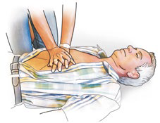
 Die betroffene Person soll auf dem Rücken und auf einem harten Untergrund liegen.
Die betroffene Person soll auf dem Rücken und auf einem harten Untergrund liegen.
 Knien Sie seitlich und möglichst nahe in Höhe des Brustkorbes, machen Sie den Brustkorb frei und suchen Sie den Druckbereich auf. Dieser befindet sich auf der unteren Hälfte des Brustbeins.
Knien Sie seitlich und möglichst nahe in Höhe des Brustkorbes, machen Sie den Brustkorb frei und suchen Sie den Druckbereich auf. Dieser befindet sich auf der unteren Hälfte des Brustbeins.
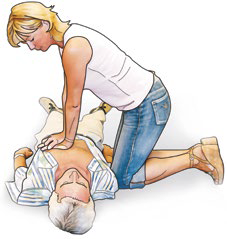
 Hier setzen Sie einen Handballen auf, platzieren auf dem Handrücken den Ballen der anderen Hand und verschränken die Finger. Nur der Handballen hat Kontakt zum Brustbein.
Hier setzen Sie einen Handballen auf, platzieren auf dem Handrücken den Ballen der anderen Hand und verschränken die Finger. Nur der Handballen hat Kontakt zum Brustbein.
 Mit durchgestreckten Armen werden nun 30 Herzdruckmassagen durchgeführt, bei denen das Brustbein mit einer Frequenz von ca. 100-120 Kompressionen pro Minute 5 cm, max. bis zu 6 cm, tief eingedrückt wird.
Mit durchgestreckten Armen werden nun 30 Herzdruckmassagen durchgeführt, bei denen das Brustbein mit einer Frequenz von ca. 100-120 Kompressionen pro Minute 5 cm, max. bis zu 6 cm, tief eingedrückt wird.
 Entlasten Sie das Brustbein nach jeder Kompression vollständig, wobei Druck- und Entlastungsphase gleich lang sind und der Handballen auch während der Entlastung immer den Kontakt zum Brustbein hat.
Entlasten Sie das Brustbein nach jeder Kompression vollständig, wobei Druck- und Entlastungsphase gleich lang sind und der Handballen auch während der Entlastung immer den Kontakt zum Brustbein hat.
Kombinieren Sie 30 Herzdruckmassagen mit je 2 Atemspenden.
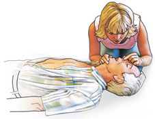
 Zum Beatmen öffnen Sie die Atemwege, indem Sie den Kopf der betroffenen Person vorsichtig nach hinten neigen, dabei gleichzeitig das Kinn anheben und vorziehen. Nun verschließen Sie mit dem Daumen und Zeigefinger der an der Stirn liegenden Hand den weichen Teil der Nase.
Zum Beatmen öffnen Sie die Atemwege, indem Sie den Kopf der betroffenen Person vorsichtig nach hinten neigen, dabei gleichzeitig das Kinn anheben und vorziehen. Nun verschließen Sie mit dem Daumen und Zeigefinger der an der Stirn liegenden Hand den weichen Teil der Nase.
 Öffnen Sie den Mund, atmen Sie normal ein und legen Sie Ihre Lippen dicht um den Mund der betroffenen Person. Blasen Sie eine Sekunde lang gleichmäßig Luft über den Mundraum in die Lunge. Beobachten Sie dabei ob der Brustkorb der betroffenen Person sich hebt und wieder senkt. Atmen Sie erneut ein, ohne dabei die Kopflage der betroffenen Person zu verändern und beatmen Sie ein zweites Mal.
Öffnen Sie den Mund, atmen Sie normal ein und legen Sie Ihre Lippen dicht um den Mund der betroffenen Person. Blasen Sie eine Sekunde lang gleichmäßig Luft über den Mundraum in die Lunge. Beobachten Sie dabei ob der Brustkorb der betroffenen Person sich hebt und wieder senkt. Atmen Sie erneut ein, ohne dabei die Kopflage der betroffenen Person zu verändern und beatmen Sie ein zweites Mal.
 Führen Sie im Anschluss weiterhin jeweils 30 Herzdruckmassagen im Wechsel mit 2 Atemspenden durch.
Führen Sie im Anschluss weiterhin jeweils 30 Herzdruckmassagen im Wechsel mit 2 Atemspenden durch.
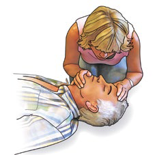
 Ist eine Beatmung über den Mund nicht möglich, kann die Mund-zu-Nase-Beatmung versucht werden. Hierzu wird mit dem Daumen der Hand am Kinn der Mund geschlossen und die Luft in die Nase geblasen (siehe Abbildung).
Ist eine Beatmung über den Mund nicht möglich, kann die Mund-zu-Nase-Beatmung versucht werden. Hierzu wird mit dem Daumen der Hand am Kinn der Mund geschlossen und die Luft in die Nase geblasen (siehe Abbildung).
 Steht ein Defibrillationsgerät zur Verfügung, wird dieses schnellstens eingesetzt (siehe unten).
Steht ein Defibrillationsgerät zur Verfügung, wird dieses schnellstens eingesetzt (siehe unten).
Hebt sich bei der ersten Atemspende der Brustkorb der betroffenen Person nicht wie bei normaler Atmung üblich, korrigieren Sie die Kopflage, kontrollieren Sie den Mundraum und entfernen ggf. sichtbare Fremdkörper. Es erfolgen nicht mehr als zwei Beatmungsversuche. Unterbrechen Sie die Kompressionen nicht für mehr als 10 Sekunden, auch wenn eine der Beatmungen ineffektiv erscheint. Ist eine Atemspende – warum auch immer – weder über den Mund noch über die Nase möglich, führen Sie zumindest die Herzdruckmassage ununterbrochen auch ohne Beatmung durch.
Wenn Sie erschöpft sind, lassen Sie sich von anderen Ersthelfenden rechtzeitig ablösen.
Defibrillation
 Sobald bei einer Person mit Kreislaufstillstand ein Defibrillationsgerät (Automatisierter externer Defibrillator, AED) zur Verfügung steht, setzen Sie dieses zügig, entsprechend der Sprachanleitung, ein. Die Sprachanweisungen starten nach dem Einschalten des AED.
Sobald bei einer Person mit Kreislaufstillstand ein Defibrillationsgerät (Automatisierter externer Defibrillator, AED) zur Verfügung steht, setzen Sie dieses zügig, entsprechend der Sprachanleitung, ein. Die Sprachanweisungen starten nach dem Einschalten des AED.
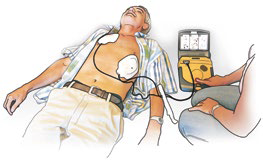
 Der Brustkorb der betroffenen Person muss frei gemacht werden, die Elektroden werden wie abgebildet auf den Brustkorb geklebt.
Der Brustkorb der betroffenen Person muss frei gemacht werden, die Elektroden werden wie abgebildet auf den Brustkorb geklebt.
 Folgen Sie den Sprachanweisungen des Gerätes, bis der Rettungsdienst eintrifft.
Folgen Sie den Sprachanweisungen des Gerätes, bis der Rettungsdienst eintrifft.
 Achtung: Beim Auslösen der Defibrillation darf niemand die betroffene Person berühren!
Achtung: Beim Auslösen der Defibrillation darf niemand die betroffene Person berühren!
 Zwischen den Defibrillationen erfolgen, wie vom Gerät vorgegeben, jeweils zwei Minuten Wiederbelebung (Druckmassage und Beatmung).
Zwischen den Defibrillationen erfolgen, wie vom Gerät vorgegeben, jeweils zwei Minuten Wiederbelebung (Druckmassage und Beatmung).
Beenden der Wiederbelebung
 Führen Sie die Wiederbelebungsmaßnahmen so lange durch, bis der Rettungsdienst eintrifft und die betroffene Person übernimmt, bzw. bis Sie Lebenszeichen (z. B. einsetzende Eigenatmung, Husten, Bewegungen) der betroffenen Person erkennen. In diesem Fall bringen Sie sie in die Seitenlage und kontrollieren weiterhin die Lebenszeichen.
Führen Sie die Wiederbelebungsmaßnahmen so lange durch, bis der Rettungsdienst eintrifft und die betroffene Person übernimmt, bzw. bis Sie Lebenszeichen (z. B. einsetzende Eigenatmung, Husten, Bewegungen) der betroffenen Person erkennen. In diesem Fall bringen Sie sie in die Seitenlage und kontrollieren weiterhin die Lebenszeichen.
Bei Säuglingen und Kindern weicht der Ablauf der Hilfeleistung etwas gegenüber dem bei Erwachsenen ab: Es wird mit fünf Beatmungen begonnen. Beginnt das Kind dann nicht zu atmen, wird die Wiederbelebung mit 30 Druckmassagen im Wechsel mit jeweils zwei Beatmungen durchgeführt. Atemvolumen und Drucktiefe werden entsprechend angepasst.
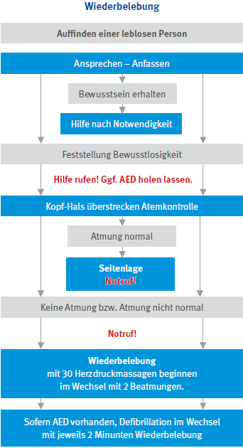
Erstickungsgefahr
Es heißt: "Jemand hat etwas verschluckt". Ob in Luft- oder Speiseröhre ist dabei zunächst nicht so wichtig, es muss schnell gehandelt werden.
Symptome
 Starker Hustenreiz und ggf. pfeifende Atemgeräusche.
Starker Hustenreiz und ggf. pfeifende Atemgeräusche.
 Schluckbeschwerden, ggf. auch Brechreiz.
Schluckbeschwerden, ggf. auch Brechreiz.
 Die betroffene Person ist blaurot im Gesicht und versucht zu atmen, schlimmstenfalls ohne dass ein Atemstoß erfolgt.
Die betroffene Person ist blaurot im Gesicht und versucht zu atmen, schlimmstenfalls ohne dass ein Atemstoß erfolgt.
 Betroffene drohen das Bewusstsein zu verlieren.
Betroffene drohen das Bewusstsein zu verlieren.
So helfen Sie richtig
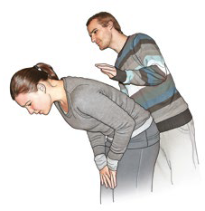
 Atmet, spricht, hustet die betroffene Person, fordern Sie sie auf, kräftig weiter zu husten.
Atmet, spricht, hustet die betroffene Person, fordern Sie sie auf, kräftig weiter zu husten.
 Solange Betroffene bei Bewusstsein sind, veranlassen Sie sie, ihren Oberkörper vornüberzubeugen.
Solange Betroffene bei Bewusstsein sind, veranlassen Sie sie, ihren Oberkörper vornüberzubeugen.
Versuchen Sie, mit kräftigen Schlägen der flachen Hand zwischen die Schulterblätter den Fremdkörper zu lösen. Prüfen Sie nach jedem Schlag, ob sich der Fremdkörper gelöst hat.
 Notruf/Alarmieren Sie den Rettungsdienst.
Notruf/Alarmieren Sie den Rettungsdienst.
Achtung: Die nachfolgende Maßnahme darf nur als letztes Mittel (ultima ratio), wenn alles andere versagt hat, angewendet werden.
Oberbauchkompression
Wenn sich der Zustand nicht bessert, und die betroffene Person trotz aller Bemühungen zu ersticken droht, kann als »allerletzte Maßnahme« noch folgendes versucht werden:
So helfen Sie richtig
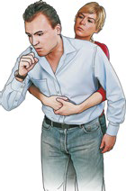
 Stellen Sie sich hinter die betroffene Person, beugen Sie ihren Oberkörper nach vorne und umfassen Sie mit beiden Armen von hinten den Oberbauch.
Stellen Sie sich hinter die betroffene Person, beugen Sie ihren Oberkörper nach vorne und umfassen Sie mit beiden Armen von hinten den Oberbauch.
 Legen Sie die geballte Faust einer Hand auf den Oberbauchbereich unterhalb des Brustbeins (zwischen Nabel und Brustbeinende).
Legen Sie die geballte Faust einer Hand auf den Oberbauchbereich unterhalb des Brustbeins (zwischen Nabel und Brustbeinende).
 Umfassen Sie mit der anderen Hand Ihre Faust und ziehen Sie diese nun bis zu fünfmal kräftig zu sich nach hinten und gleichzeitig nach oben.
Umfassen Sie mit der anderen Hand Ihre Faust und ziehen Sie diese nun bis zu fünfmal kräftig zu sich nach hinten und gleichzeitig nach oben.
 Lässt sich die Atemwegsverlegung der betroffenen Person auch mit der Oberbauchkompression allein nicht beseitigen, wiederholen Sie die Maßnahmen und wechseln Sie dabei zwischen jeweils max. 5 Rückenschlägen und Oberbauchkompressionen, bis der Rettungsdienst eintrifft.
Lässt sich die Atemwegsverlegung der betroffenen Person auch mit der Oberbauchkompression allein nicht beseitigen, wiederholen Sie die Maßnahmen und wechseln Sie dabei zwischen jeweils max. 5 Rückenschlägen und Oberbauchkompressionen, bis der Rettungsdienst eintrifft.
 Bei Bewusstlosigkeit leiten Sie unverzüglich Wiederbelebungsmaßnahmen ein (siehe hier).
Bei Bewusstlosigkeit leiten Sie unverzüglich Wiederbelebungsmaßnahmen ein (siehe hier).
Insektenstich im Mund-Rachenraum
Insektenstiche im Mund- bzw. Rachenraum kommen im Sommer gelegentlich vor, wenn versehentlich ein Insekt, z. B. eine Wespe, beim Essen oder Trinken in den Mund-Rachenraum gerät. Betroffen sind oft Kinder.
Symptome
 Betroffene verhalten sich in der Situation oft "panikartig".
Betroffene verhalten sich in der Situation oft "panikartig".
 Starker Schmerz im Stichbereich.
Starker Schmerz im Stichbereich.
 Zunehmende Schwellung im Mund-Rachenraum oder der Zunge.
Zunehmende Schwellung im Mund-Rachenraum oder der Zunge.
 Zunehmende Atemnot mit Blaufärbung im Gesicht.
Zunehmende Atemnot mit Blaufärbung im Gesicht.
Durch das Insektengift schwellen im empfindlichen Mund-Rachenraum die Schleimhäute an oder es kommt zum Anschwellen der Zunge. Die Atemwege verengen sich und drohen sich zu verschließen. Es besteht akute Erstickungsgefahr. Allergikern droht zusätzlich noch ein allergischer Schock.
So helfen Sie richtig
 Notruf/Alarmieren Sie sofort den Rettungsdienst.
Notruf/Alarmieren Sie sofort den Rettungsdienst.
 Das Kühlen der Mund-Rachenschleimhäute mit Eis unterdrückt die Schwellung. Lassen Sie Betroffene Speiseeis oder Eiswürfel lutschen, und kühlen Sie den Hals mit einem Eisbeutel oder kalten Umschlägen von außen.
Das Kühlen der Mund-Rachenschleimhäute mit Eis unterdrückt die Schwellung. Lassen Sie Betroffene Speiseeis oder Eiswürfel lutschen, und kühlen Sie den Hals mit einem Eisbeutel oder kalten Umschlägen von außen.
 Sollte ein Atemstillstand eintreten, müssen Sie unverzüglich beatmen und den Kreislauf kontrollieren, bis der Rettungsdienst eintrifft.
Sollte ein Atemstillstand eintreten, müssen Sie unverzüglich beatmen und den Kreislauf kontrollieren, bis der Rettungsdienst eintrifft.
Beugen Sie vor, indem Sie beim Essen und Trinken in der warmen Jahreszeit achtsam sind und z. B. Trinkhalme verwenden. Wenn Allergien bekannt sind, sollte nach ärztlicher Absprache ein Notfallset mitgeführt werden (siehe hier).
Elektrounfälle
Symptome
 Bei kurzer Stromeinwirkung und geringer elektrischer Energie treten Beschwerden wie Atemnot, Krampfgefühl in der Brust, Angstzustände, Herzjagen, Unruhe und Schwitzen auf. Die Beschwerden klingen wieder ab.
Bei kurzer Stromeinwirkung und geringer elektrischer Energie treten Beschwerden wie Atemnot, Krampfgefühl in der Brust, Angstzustände, Herzjagen, Unruhe und Schwitzen auf. Die Beschwerden klingen wieder ab.
 Bei Körperdurchströmung unter erhöhter Spannung kann es zu Haut- und Gewebeschäden mit sogenannten Strommarken kommen. Das sind Verbrennungen, die an den Ein- und Austrittsstellen des Stromes auftreten.
Bei Körperdurchströmung unter erhöhter Spannung kann es zu Haut- und Gewebeschäden mit sogenannten Strommarken kommen. Das sind Verbrennungen, die an den Ein- und Austrittsstellen des Stromes auftreten.
 Bei Körperdurchströmung unter erhöhter Spannung kann es zu Haut- und Gewebeschäden mit sogenannten Strommarken kommen. Das sind Verbrennungen, die an den Ein- und Austrittsstellen des Stromes auftreten.
Bei Körperdurchströmung unter erhöhter Spannung kann es zu Haut- und Gewebeschäden mit sogenannten Strommarken kommen. Das sind Verbrennungen, die an den Ein- und Austrittsstellen des Stromes auftreten.
 Die Herztätigkeit wird gestört. Herzrhythmusstörungen können auftreten, schlimmstenfalls kommt es zum Herz-Kreislauf-Stillstand.
Die Herztätigkeit wird gestört. Herzrhythmusstörungen können auftreten, schlimmstenfalls kommt es zum Herz-Kreislauf-Stillstand.
 Schädigungen an Gehirn und Nervensystem verursachen Schmerzen, Lähmungen, Krämpfe und Bewusstlosigkeit.
Schädigungen an Gehirn und Nervensystem verursachen Schmerzen, Lähmungen, Krämpfe und Bewusstlosigkeit.
Da das Herz zur eigenen Tätigkeit selbst elektrische Reize bildet, kann schon eine sehr kurze Stromeinwirkung die Herztätitkeit lebensbedrohlich stören. Es entsteht dann das so genannte Herzkammerflimmern. In diesem Zustand hat das Herz keine Pumpwirkung mehr, was einem Herz-Kreislauf-Stillstand gleichkommt (siehe hier). Entsprechend finden Sie eine leblose Person vor.
Auch das Gehirn kann in seiner Funktion erheblich gestört werden. Bewusstlosigkeit, Krämpfe und Atemstillstand können die Folgen sein.
Stomunfälle sind vermeidbar.
Oft sind leichtsinniger Umgang mit elektrischen Geräten, unfachmännische Bastel- und Reparaturarbeiten an elektrischen Einrichtungen und Missachtung von Warn- und Absperrmaßnahmen ursächlich für Unfälle mit elektrischem Strom.
Umsichtiges Verhalten zu Hause und im Betrieb hilft Unfälle zu verhindern.
Lassen Sie elektrische Geräte regelmäßig durch eine Elektrofachkraft überprüfen.
Unfälle bei Niederspannung bis 1 kV
So helfen Sie richtig
 Zuerst an die eigene Sicherheit denken. Sie dürfen keinesfalls selbst in den Stromkreis der verunglückten Person geraten. Unfallstellen im Betrieb absichern.
Zuerst an die eigene Sicherheit denken. Sie dürfen keinesfalls selbst in den Stromkreis der verunglückten Person geraten. Unfallstellen im Betrieb absichern.
 Unterbrechen Sie den Stromkreis, in dem sich die verunglückte Person befindet.
Unterbrechen Sie den Stromkreis, in dem sich die verunglückte Person befindet.
Einfach gelingt dies durch Ziehen des Steckers oder Ausschalten des Elektrogeräts. Ist dies nicht möglich, müssen Sie die Hauptsicherung (Schutzschalter) ausschalten.
 Gelingt die Unterbrechung des Stromkreises nicht, kann versucht werden, die verunglückte Person von der Stromquelle wegzuziehen.
Gelingt die Unterbrechung des Stromkreises nicht, kann versucht werden, die verunglückte Person von der Stromquelle wegzuziehen.
Dabei Betroffene aber nicht direkt anfassen! Versuchen Sie, mit isolierenden Gegenständen wie Kleidungsstücken, Decken o. Ä. Betroffene von der Stromquelle zu trennen, ohne sich dabei selbst zu gefährden.
Vorsicht ist in Feuchträumen geboten, weil die elektrische Leitfähigkeit hier höher ist.
 Nach der Rettung (Entfernung aus dem Stromkreis) prüfen Sie sofort Bewusstsein und Atmung der verunglückten Person.
Nach der Rettung (Entfernung aus dem Stromkreis) prüfen Sie sofort Bewusstsein und Atmung der verunglückten Person.
 Eventuell sind Wiederbelebungsmaßnahmen notwendig, wobei der Einsatz eines Defibrillators oft lebensrettend ist (siehe hier).
Eventuell sind Wiederbelebungsmaßnahmen notwendig, wobei der Einsatz eines Defibrillators oft lebensrettend ist (siehe hier).
 Notruf/Alarmieren Sie schnellstens den Rettungsdienst.
Notruf/Alarmieren Sie schnellstens den Rettungsdienst.
 Auch die Brandwunden müssen verbunden werden, allerdings haben die lebensrettenden Maßnahmen unbedingt Vorrang.
Auch die Brandwunden müssen verbunden werden, allerdings haben die lebensrettenden Maßnahmen unbedingt Vorrang.
 Verunglückte warm halten (Rettungsdecke).
Verunglückte warm halten (Rettungsdecke).
 Betroffene, die Kontakt zu elektrischem Strom hatten, müssen in ärztliche Behandlung, auch wenn sie sich besser fühlen.
Betroffene, die Kontakt zu elektrischem Strom hatten, müssen in ärztliche Behandlung, auch wenn sie sich besser fühlen.
Unfälle bei Hochspannung mit mehr als 1 kV
So helfen Sie richtig
 Bei allen Unfällen im Hochspannungsbereich hat die Sicherheit der Ersthelferin bzw. des Ersthelfer höchste Priorität. Sie sind selbst in Lebensgefahr. Halten Sie einen Sicherheitsabstand von mindestens 20 Metern zur Stromquelle ein (siehe auch Info für Helferinnen und Helfer). Solange der Strom nicht unterbrochen/abgeschaltet ist, kann er in Form eines Lichtbogens auf eine sich annähernde Person überspringen.
Bei allen Unfällen im Hochspannungsbereich hat die Sicherheit der Ersthelferin bzw. des Ersthelfer höchste Priorität. Sie sind selbst in Lebensgefahr. Halten Sie einen Sicherheitsabstand von mindestens 20 Metern zur Stromquelle ein (siehe auch Info für Helferinnen und Helfer). Solange der Strom nicht unterbrochen/abgeschaltet ist, kann er in Form eines Lichtbogens auf eine sich annähernde Person überspringen.
 Die Hilfe beginnt mit dem Notruf. Alarmieren Sie schnellstmöglich den Rettungsdienst mit dem Hinweis auf einen Hochspannungsunfall und einer präzisen Ortsangabe.
Die Hilfe beginnt mit dem Notruf. Alarmieren Sie schnellstmöglich den Rettungsdienst mit dem Hinweis auf einen Hochspannungsunfall und einer präzisen Ortsangabe.
 Die Rettung der Betroffenen aus dem Gefahrenbereich erfolgt aus Sicherheitsgründen durch Fachpersonal.
Die Rettung der Betroffenen aus dem Gefahrenbereich erfolgt aus Sicherheitsgründen durch Fachpersonal.
 Nach der Rettung der Verunglückten sind ggf. Wiederbelebungsmaßnahmen erforderlich.
Nach der Rettung der Verunglückten sind ggf. Wiederbelebungsmaßnahmen erforderlich.
 Die Versorgung meist schwerer Brandwunden und Wärmeerhalt sind weitere wichtige Maßnahmen.
Die Versorgung meist schwerer Brandwunden und Wärmeerhalt sind weitere wichtige Maßnahmen.
Unfälle im Hochspannungsbereich sind grundsätzlich nur möglich, wenn die Sicherheitsvorschriften nicht beachtet und Sicherheitsbarrieren, Warnschilder usw. in gröbster Weise missachtet werden, z. B. durch Erklimmen eines Hochspannungsmastes, Eindringen in Umspannwerke oder das Herumklettern auf Bahnwaggons unter einer Oberleitung. Nur ein hinreichend großer Sicherheitsabstand von min. 20 Metern kann verhindern, dass Sie in den Stromkreis geraten!
Schock
Der Begriff Schock wird ganz allgemein für Störungen des Kreislaufes verwendet. Oft wird der Schock auch als Kollaps oder Kreislaufkollaps bezeichnet.
Symptome
 Betroffene sehen sehr blass aus und sind oft sehr unruhig und nervös, haben Angst.
Betroffene sehen sehr blass aus und sind oft sehr unruhig und nervös, haben Angst.
 Sie zittern und fühlen sich geschwächt, viele hält es nicht auf den Beinen, sie müssen sitzen oder sie liegen bereits am Boden.
Sie zittern und fühlen sich geschwächt, viele hält es nicht auf den Beinen, sie müssen sitzen oder sie liegen bereits am Boden.
 Die Haut fühlt sich kalt an, sie ist oftmals schweißnass und Betroffene frieren, ihnen ist kalt.
Die Haut fühlt sich kalt an, sie ist oftmals schweißnass und Betroffene frieren, ihnen ist kalt.
 Der Puls ist schwach und beschleunigt.
Der Puls ist schwach und beschleunigt.
So helfen Sie richtig
 Notruf/Alarmieren Sie den Rettungsdienst.
Notruf/Alarmieren Sie den Rettungsdienst.
 Zuwendung und ständige Betreuung sind zunächst das Wichtigste.
Zuwendung und ständige Betreuung sind zunächst das Wichtigste.
 Decken Sie die Betroffenen sofort der Witterung entsprechend warm zu. Ideal ist die Rettungsdecke aus dem Verbandkasten (ggf. mit Pflaster fixieren). Sie ist groß genug, um betroffene Personen auch zum Boden hin vor dem Auskühlen zu schützen. Natürlich kann auch eine Wolldecke oder warme Kleidung verwendet werden.
Decken Sie die Betroffenen sofort der Witterung entsprechend warm zu. Ideal ist die Rettungsdecke aus dem Verbandkasten (ggf. mit Pflaster fixieren). Sie ist groß genug, um betroffene Personen auch zum Boden hin vor dem Auskühlen zu schützen. Natürlich kann auch eine Wolldecke oder warme Kleidung verwendet werden.
 Lagern Sie Betroffene mit leicht (ca. 20 cm) erhöhten Beinen. Dies unterstützt den Kreislauf.
Lagern Sie Betroffene mit leicht (ca. 20 cm) erhöhten Beinen. Dies unterstützt den Kreislauf.
 Bleiben Sie bei Betroffenen und betreuen Sie sie.
Bleiben Sie bei Betroffenen und betreuen Sie sie.
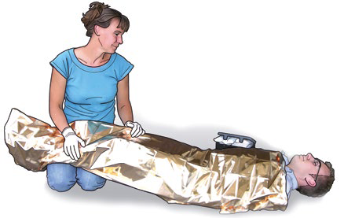
Ein Schock kann viele Ursachen haben, da mit dem Begriff eine schwere Kreislaufstörung mit Blutmangel am Herzen bezeichnet wird.
Daher ist naheliegend, dass u.a. ein größerer Blutverlust bei äußeren aber auch bei inneren Verletzungen zum Schock führen kann.
Plötzliches Erschrecken, Angst, Schmerzen usw. können durch nervöse Fehlsteuerung der Blutgefäße einen Schock auslösen. Der gängige Begriff für diese Art der Kreislaufstörung ist "Kollaps". Unfallbeteiligte können so reagieren, ohne selbst verletzt zu sein, daher spricht man umgangssprachlich von "geschockt sein".
Ein Schock kann auch dann auftreten, wenn der Kreislauf durch großen Flüssigkeitsverlust, etwa durch heftige Durchfälle bzw. Erbrechen oder auch bei starkem Schwitzen, z. B. in Folge körperlicher Anstrengungen, auch beim Sport, beeinträchtigt wird. Oft wurde zu wenig getrunken.
Insbesondere Kinder reagieren auf Flüssigkeitsverlust sehr empfindlich. Vergiftungen, aber auch allergische Reaktionen des Körpers (siehe hier) durch die Unverträglichkeit von bestimmten Substanzen, z. B. Medikamenten oder Insektengift (z. B. Wespenstich), können zum Schock führen.
Unabhängig von den Ursachen bedeutet ein Schock immer eine unzureichende Versorgung der Körperzellen vor allem mit Sauerstoff und eine mangelnde Entsorgung der Körperzellen unter anderem von Kohlendioxid. Hierdurch verschlechtert sich der Allgemeinzustand der betroffenen Person mit zunehmender Dauer des Schocks immer rasanter.
Daher sind auch die genannten Erste-Hilfe-Maßnahmen so wichtig. Sie wirken einem möglichen Kreislaufzusammenbruch entgegen.
Wichtiger Hinweis:
Hat die betroffene Person Atemnot oder Beschwerden im Bereich des Herzes, lagern Sie die Beine nicht erhöht. Ggf. ist es hilfreich, den Oberkörper erhöht zu lagern.
Schwere allergische Reaktion
Bei manchen Menschen lösen Stoffe, mit denen der Körper in Kontakt kommt bzw. die vom Körper aufgenommen werden, eine schwere allergische Reaktion aus. Beispiele sind Insektenstiche (z. B. Wespen), bestimmte Lebensmittel, aber auch Unverträglichkeiten auf bestimmte Medikamente.
Symptome
 Erste Anzeichen sind gelegentlich Kribbeln im Mund, an der Zunge und den Lippen.
Erste Anzeichen sind gelegentlich Kribbeln im Mund, an der Zunge und den Lippen.
 Äußerlich kann Quaddelbildung der Haut mit oft heftigem Juckreiz auftreten.
Äußerlich kann Quaddelbildung der Haut mit oft heftigem Juckreiz auftreten.
 Das Atmen fällt schwer (Atemnot durch Zuschwellen der Atemwege).
Das Atmen fällt schwer (Atemnot durch Zuschwellen der Atemwege).
 Mögliche weitere Symptome sind Erbrechen, Kollaps und Verlust des Bewusstseins.
Mögliche weitere Symptome sind Erbrechen, Kollaps und Verlust des Bewusstseins.
So helfen Sie richtig
 Unterbinden Sie – wenn noch möglich – die Zufuhr des allergieauslösenden Stoffes, indem Sie z. B. den Stachel eines Insekts entfernen (Einstichstelle kühlen) oder die Medikamentenzufuhr unterbinden.
Unterbinden Sie – wenn noch möglich – die Zufuhr des allergieauslösenden Stoffes, indem Sie z. B. den Stachel eines Insekts entfernen (Einstichstelle kühlen) oder die Medikamentenzufuhr unterbinden.
 Notruf/Alarmieren Sie schnellstmöglich den Rettungsdienst.
Notruf/Alarmieren Sie schnellstmöglich den Rettungsdienst.
 Beruhigen und betreuen Sie die betroffene Person.
Beruhigen und betreuen Sie die betroffene Person.
 Betroffene gut warm halten (z. B. mit der Rettungsdecke zudecken).
Betroffene gut warm halten (z. B. mit der Rettungsdecke zudecken).
 Bei Atemnot öffnen Sie beengende Kleidung und lagern die Person mit erhöhtem Oberkörper. Öffnen Sie ggf. ein Fenster.
Bei Atemnot öffnen Sie beengende Kleidung und lagern die Person mit erhöhtem Oberkörper. Öffnen Sie ggf. ein Fenster.
 Fragen Sie nach einem Notfallset, welches bei bekannten Allergien von Betroffenen mitgeführt wird und helfen Sie bei der Anwendung der Gegenmittel.
Fragen Sie nach einem Notfallset, welches bei bekannten Allergien von Betroffenen mitgeführt wird und helfen Sie bei der Anwendung der Gegenmittel.
Allergische Reaktionen können sich sekundenschnell entwickeln, manchmal jedoch auch mit zeitlicher Verzögerung eintreten. Daher ist schon bei ersten Anzeichen wie Kribbeln im Mund, an der Zunge und den Lippen oder Quaddelbildung auf der Haut mit Juckreiz an eine allergische Reaktion zu denken.
Die Gabe von mitgeführten Notfallmedikamenten stellt eine Erste-Hilfe-Leistung dar und kann Leben retten. Die Notfallsets sind für Laien gemacht und einfach zu handhaben.